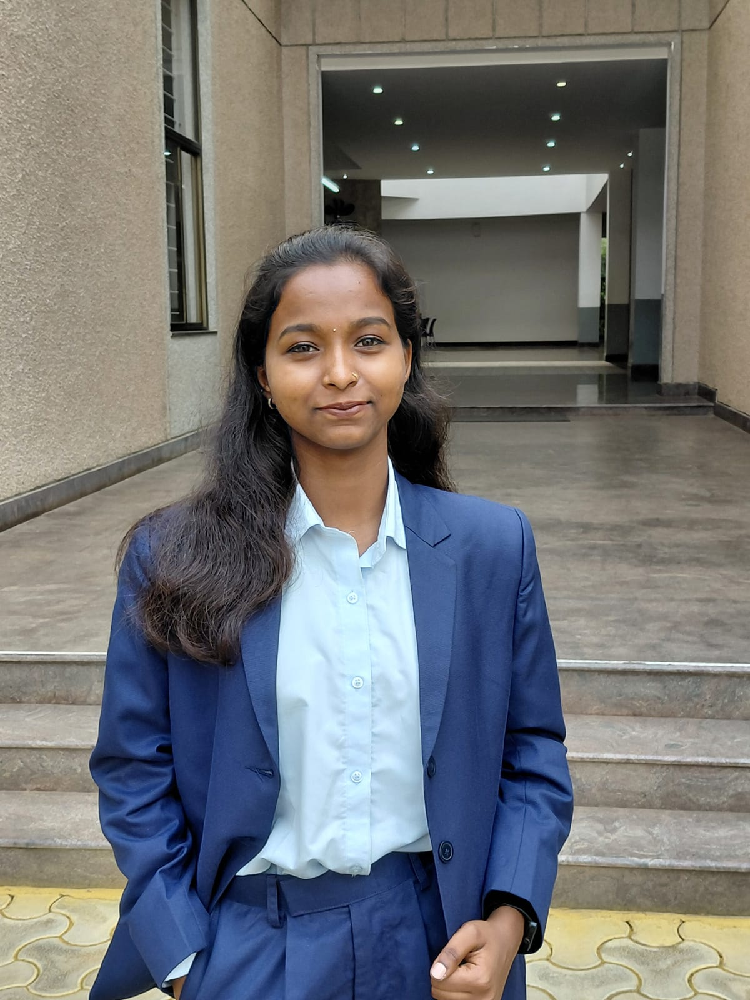
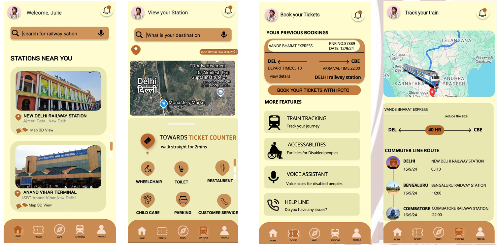
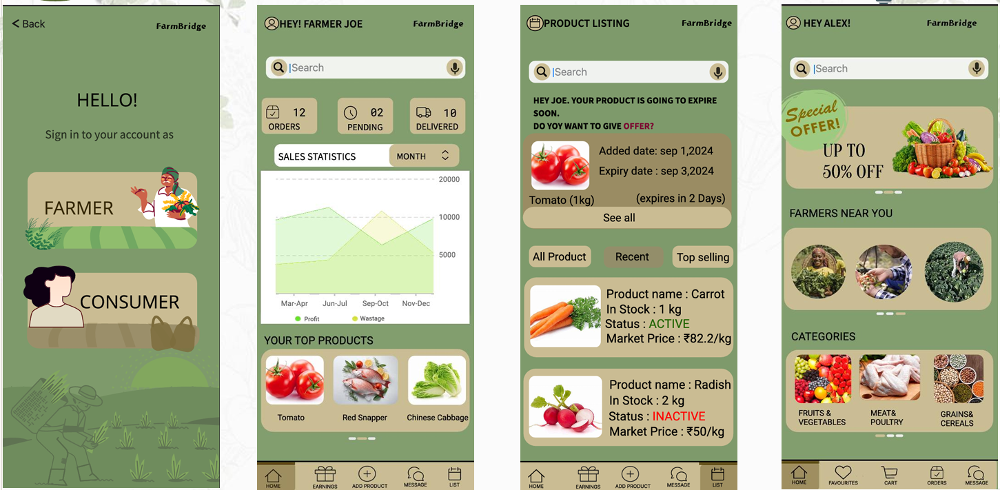
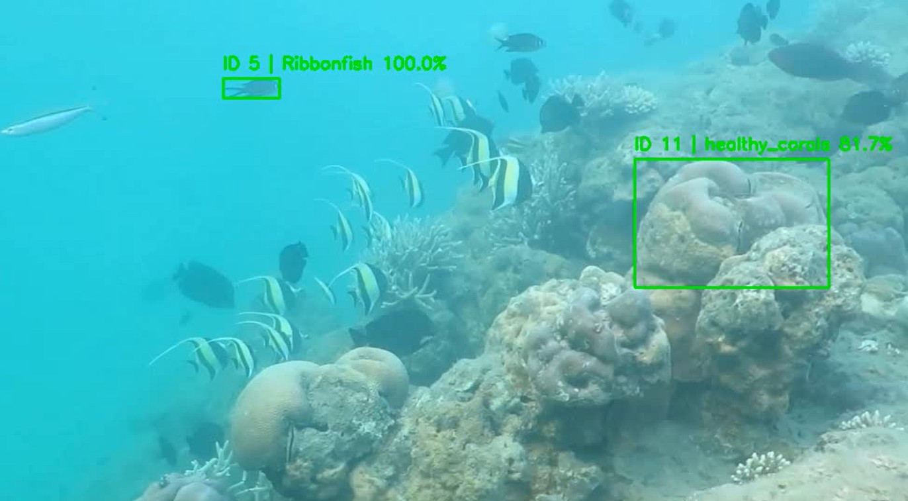
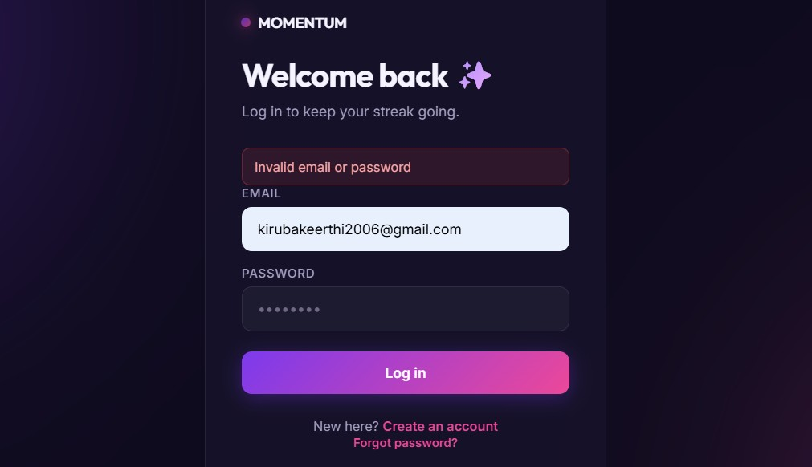
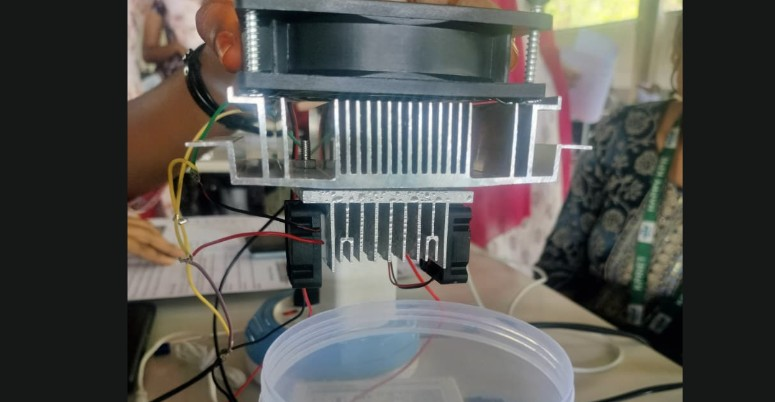

Computer Science undergraduate with a strong base in DSA, OOP and DBMS — currently focused on shipping production-grade full-stack apps and exploring how AI/ML fits into real, usable products.

I'm a final-year Computer Science Engineering student at KPR Institute of Engineering and Technology, Coimbatore, graduating in 2027. My work sits at the intersection of full-stack web development and applied AI/ML — from building REST-API-driven web apps to training CNNs for real-world image classification tasks.
Across four internships I've worked frontend, backend, and full-stack roles, and spent time in a computer vision research lab improving how AI-driven tools present their results to real users. I care about usability as much as I care about the code underneath it.
Outside of engineering, I've hosted large college events as an MC and I'm currently learning Japanese in my own time — both of which keep me comfortable communicating clearly under pressure, on stage or in a stand-up.
Comfortable taking a project from idea to a deployed, working product — not just a local demo.
Frontend, backend, and mobile experience across four internships, so I can plug into any part of a team.
MC experience for large college events means I can present, explain, and defend my work confidently.

Full-stack web app with route search, REST API integration, and a responsive interface to improve station and train navigation.

Cross-platform mobile app connecting farmers and buyers, with product listings, authentication, and real-time data management.

CNN-based image classification model built with Python, PyTorch, and OpenCV — 90% classification accuracy on underwater species.

Production-deployed productivity app with JWT auth, OTP-based password reset, drag-and-drop task management, reminders, and a glassmorphic dark UI.

Portable solar-powered atmospheric water generator using Peltier technology — secured a Top-10 position at INNOVASENCE.
Co-authored a paper looking at how bias creeps into AI models used for autonomous robotic threat detection, and what practical steps can reduce it. The goal was simple: systems that make safety decisions shouldn't inherit blind spots from their training data.
I'm actively looking for full-stack / software engineering roles. Reach out — I reply fast.